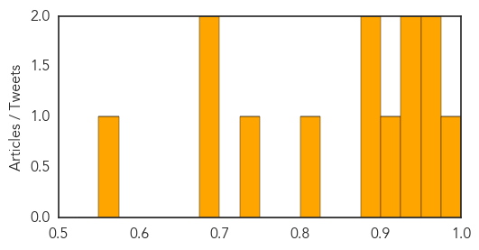

Dengue Fever
30-Day Web Trend
6 alerts, 4 warnings

30-Day Twitter Trend
2 alerts, 0 warnings

Article Locations


Article Confidences
Top Articles:
- 0.992
- Proactive state checks rise of dengue, malaria
- 0.972
- Dengue kills 60 in Myanmar
- 0.966
- Dengue Fever Outbreak In Am. Samoa Declared Epidemic
- 0.946
- HPA sending samples abroad to fight dengue
- 0.925
- Health Minister urges continued vigilance against ZikV
- 0.906
- Health Minister urges continued vigilance against ZikV
- 0.896
- How To Tell If A Bug Bite Needs Medical Attention
- 0.892
- Dengue cases rise in several provinces
- 0.805
- Yemen: UN agencies deliver life-saving medicines and domestic supplies amid ongoing fighting
- 0.741
- My View - We can win the war against dengue
- 0.682
- Anti-dengue drive to continue on Eid
- 0.680
- Dengue, malaria prevention programmes on hold in Gurgaon : Mail Today, News
- 0.574
- unravelling the relationship
Top Tweets:
-
No tweets found for Jul 14, 2015
Unknown
30-Day Web Trend
0 alerts, 0 warnings

30-Day Twitter Trend
Article Locations


Article Confidences
Top Articles:
- 0.988
- BREAKING: One person confirmed with active tuberculosis at Frank Macias Elementary
- 0.982
- Three UAE Mers patients recover from coronavirus
- 0.970
- Korean cardinal praises medics' dedication
- 0.958
- Vaccines 1.6 – Polio “eradication” vaccine spreads polio in Nigeria (2009)
- 0.950
- Bird flu strain found on Lancashire farm can be caught by humans
- 0.946
- California congenital syphilis cases increasing
- 0.942
- Camden GP calls for people to get flu shots
- 0.928
- Health officials: 71 people positive for TB, none believed to be active
- 0.926
- Second round of TB tests result in 13 positive cases; separate investigation finds 20 positive at halfway house
- 0.923
- New case of PED confirmed in Oxford County
- 0.917
- Chicago Tribune
- 0.917
- Chicago Tribune
- 0.917
- Chicago Tribune
- 0.917
- Chicago Tribune
- 0.917
- Chicago Tribune
- 0.917
- Chicago Tribune
- 0.917
- Chicago Tribune
- 0.917
- Chicago Tribune
- 0.917
- Chicago Tribune
- 0.917
- Chicago Tribune
- 0.917
- Chicago Tribune
- 0.917
- Chicago Tribune
- 0.917
- Chicago Tribune
- 0.917
- Chicago Tribune
- 0.917
- Chicago Tribune
- 0.917
- Chicago Tribune
- 0.917
- Chicago Tribune
- 0.917
- Chicago Tribune
- 0.917
- Chicago Tribune
- 0.917
- Chicago Tribune
- 0.917
- Chicago Tribune
- 0.917
- Chicago Tribune
- 0.917
- Chicago Tribune
- 0.917
- Chicago Tribune
- 0.884
- 170,000 chickens culled to stop bird flu outbreak
- 0.883
- Syphilis Cases Increasing in California Women
- 0.831
- Syphilis Cases On The Rise Among Women In SoCal « CBS Los Angeles
- 0.823
- Flu season among the worst
- 0.793
- Potomac Cautions About Lyme Disease
- 0.785
- More women passing syphilis to their newborns, California health officials say
- 0.758
- Medical peer review in UAE civil proceedings: a case study
- 0.713
- SC braces for new deadly canine flu
- 0.692
- Cervical cancer killing more women
- 0.675
- Cervical Cancer Killing More Women – Daily Guide Ghana
- 0.675
- This Invention by Burkinabe and Burundian Student Scientists Could Save Thousands from Malaria · Global Voices
- 0.643
- WHO delivers urgent health supplies to Aden: statement
- 0.634
- State’s new ‘Stop HPV’ campaign urges parents to vaccinate their 11-, 12-year-olds
- 0.625
- Lupus is difficult to diagnose
- 0.614
- Elective Surgery Is Associated with Lower Risk of Death than Drugs for Ulcerative Colitis Treatment
- 0.607
- 1.4 million birds destroyed
Showing top 50 articles...
Top Tweets:
-
No tweets found for Jul 14, 2015